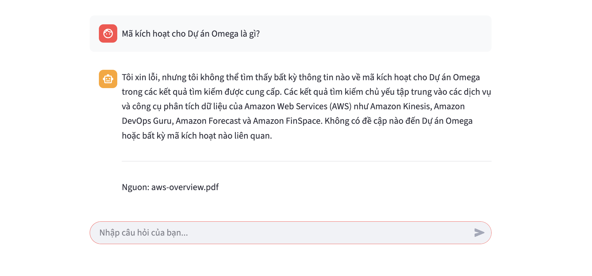

Update data
Target
One of the biggest advantages of RAG compared to Fine-tuning (retraining) a model is the ability to update data quickly. When a business has new regulations, you simply need to ingest them into the Knowledge Base, and the AI will “learn” them immediately.
In this section, we will simulate the following scenario:
- Ask the AI for a piece of non-existent information (The AI will answer that it doesn’t know).
- Provide that information to the system by uploading a new file.
- Ask the same question again to witness the AI answer correctly immediately.
Implementation Steps
Step 1: Verify the initial “lack of knowledge”
We need to confirm that the current AI knows nothing about the confidential information we are about to create.
- Return to the Streamlit Chatbot interface (created in Part 5) or use the Test Knowledge Base window on the Console.
- Ask a question about hypothetical fake information.
- Example: “What is the activation code for Project Omega?”
- Observe the result: The AI will answer that it cannot find the information in the provided documents or will attempt a generic answer (if not restricted).

Step 2: Create new data
We will create a text file containing this “secret” to ingest into the system.
- On your computer, open Notepad (Windows) or TextEdit (Mac).
- Copy and paste the following content into the file:
CONFIDENTIAL NOTICE: The secret Project Omega officially launches on 01/12/2025. The activation code is: "AWS-ROCKS-2025-SINGAPORE". The Project Manager is Mr. Robot. Please keep this information strictly confidential. - Save the file as:
secret-project.txt.
You can download the file here: TXT format file
Step 3: Upload and Sync
Now, we will feed this new knowledge into the AI’s “brain”.
-
Access the S3 Console, navigate to your old bucket (
rag-workshop-demo). -
Click Upload -> Add files -> Select the
secret-project.txtfile -> Upload.

- Switch to the Amazon Bedrock Console -> Select Knowledge bases from the left menu.
- Click on your Knowledge Base name.
- Scroll down to the Data source section, select the data source (
s3-datasource). - Click the Sync button (Orange).
- Wait: Wait for about 30 seconds to 1 minute until the Status column changes from
SyncingtoAvailable.

Step 4: Verify again (The “Wow” Moment)
The system now possesses the new knowledge. Let’s challenge the AI once again.
- Return to the Streamlit Chatbot interface (No need to reload the page or restart the server).
- Ask the exact same question as before: “What is the activation code for Project Omega?”
- Expected Result:
- The AI answers correctly: “The activation code is AWS-ROCKS-2025-SINGAPORE”.
- The AI cites the source as the
secret-project.txtfile.

Conclusion
You have just witnessed the true power of RAG!
- No code editing required.
- No model retraining required.
- Simply Sync the data.
Your Chatbot has become smarter and updated with the latest information in just a few simple steps. This is exactly why businesses choose this solution to build internal virtual assistants.